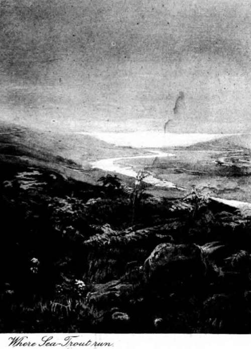

Chapter VI. Sea Trout Fishing
Description
This section is from the book "Fly Fishing", by Sir Edward Grey. Also available from Amazon: Fly Fishing.
Chapter VI. Sea Trout Fishing
ALL through May and June the keenest angler may well be content to stay by a good dry fly river, for he is having there the best and most interesting fishing that this part of the season can give him. But after June is over, good though some days in July may be, I own that a certain feeling of restlessness comes over me. I struggle against it, for it seems a sort of disloyalty to the river and the country which have given so much pleasure, but it will assert itself, just as perhaps the migratory instinct works in the nature of birds, some of which leave their summer homes long before the warm days have come to an end, while there is still abundance of food and everything that they need. As the summer goes on it is felt more and more that the glory of the woods of the south of England is over, that they have subsided into a sombre monotony and silence, which will last till autumn. One feels too that the water meadows are a little too soft, and that the air lacks freshness; and so, without consciously desiring a change, one begins to think of rocks and keener air. The even-flowing chalk stream, with its mills and dams and hatches, the river which is so clear and gentle, so docile and perfectly under control, seems just a little tame, till at last there rises up before one's mind the full-formed images of rough noisy streams and great brown pools clearing after a flood. One stands in thought beside them, and is impatient to be really there.
It may be easy to provide the change of scene, if that is the only thing desired, but how can this change be combined with the best of fishing from the middle of July through August and into September ? Some salmon rivers may, with the help of lucky floods, give good sport at this time, but the angler cannot get the best of salmon fishing now. It is only grilse and small salmon that he can expect to get at their best. The bigger fish, with which it really needs a big rod and strong salmon gut to cope, will not, as a rule, be fresh run or in fine condition. There is, however, one sort of angling that is at its best, and indeed is only good at all in the months of July, August, and September. These are the months in which the sea trout run up fresh from the sea, and it is in pursuit of them that the best sport is now to be had. It is not to large rivers that one generally goes in search of sea trout fishing, and the reason for this is to be found partly in the habits of sea trout, and partly in the arrangements made by mankind with respect to rivers and their rents. Large rivers, to which sea trout have free access, will also have numbers of salmon, and if they are let at all will be let at rents for which the presence of salmon is entirely responsible, and which are far in excess of what is charged or paid for the best sea trout fishing alone. Sea trout in a large salmon river are not of much more account than grouse in a deer forest, and are even looked upon as a nuisance when they are running and take a salmon fly freely, whilst the angler is expecting salmon. If one lived always upon a large river, and could fish all through the season, it would be better in the latter half of July and beginning of August to take only a small rod and fish especially for sea trout, but at this time of year the salmon and grilse are showing freely in the streams and pools where they lie, and the angler, who may only have a very limited amount of salmon fishing in the year, generally takes the chance of getting some of the salmon which he sees, and disregards the sea trout. It is difficult to fish contentedly for smaller fish and not to try for the bigger, when the latter are constantly showing themselves, and the result is that one sometimes wastes the opportunity of first-rate sport with sea trout in order to have a very indifferent day's salmon fishing. I remember one week in July, when sea trout were running on a first-rate salmon river in Scotland. They rested in numbers in a very long stream and pool where they could easily be reached by wading, but salmon and grilse were there too, and I fished with nothing but salmon flies and salmon gut and a seventeen feet rod. I was continually hooking sea trout of all weights from one pound to three pounds, and of course getting no fun with them on such tackle: if I had used a small rod, and been content to fish the sides of the stream and the stiller parts with sea trout flies, I should have had wonderful sport with sea trout, and probably have hooked an occasional small salmon or grilse also, even though it was impossible to cover the whole water properly with anything but a salmon rod. As it was, my total for five days was four salmon (none of them large) and six grilse, besides a number of fresh run sea trout, which were all wasted as far as sport was concerned. The memory of that week is one of wasted opportunities, which have never recurred. On the other hand, if I were by that pool again and the same conditions were present, I should remember that once in July a friend of mine landed fourteen fresh run salmon and grilse in one day from the stream there, and if I gave myself up to sea trout fishing I might be tormented by the thought that I was missing an opportunity of having such a day as he once had.
Such are some of the perplexities of sea trout fishing in large rivers.
Large rivers, however, are not the most suitable for sea trout fishing. The sea trout is not content to stay for days and weeks in running water or strong streams, as the salmon is. What it really likes is to get to deep still water as soon as possible; and small rivers giving easy access to lochs, or having deep still reaches of their own, are the best places for sea trout fishing.
The streams and shorter pools of these rivers give the best sport of all, when the fish are there, but it must be remembered that sea trout pass quickly through the running water, and the best river fishing for sea trout is limited to the particular weeks of the season and the special conditions of the river, in which sea trout run up from the salt water. The season during which these fish run in the greatest numbers is in July and August. During these months they accumulate at the mouths of small rivers and burns, going to and fro in the tidal water waiting for a flood. With each flood or spate, as it is called, quantities of the fish move up the river, and when the water is still high, but falling, the angler has his great opportunity.
Continue to: